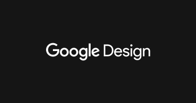
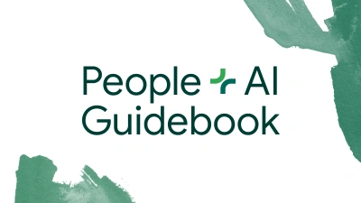
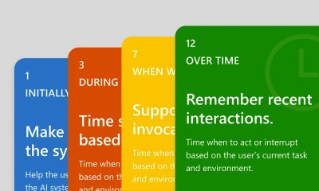
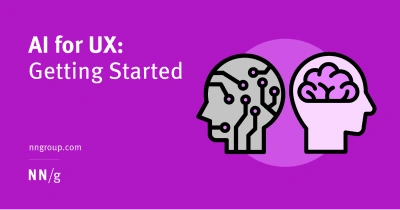
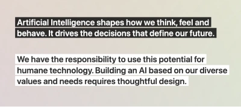
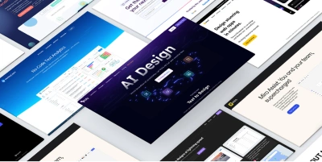
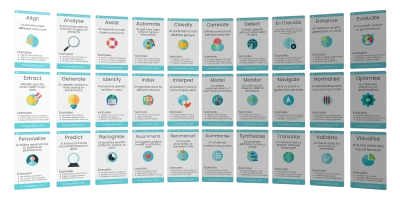
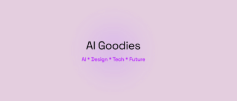

AI
We all feel we should be embracing it, but what are best practices for user experience and sustainability when designing with and for AI?
AI - Google design

Case studies from Google projects on how AI has been in successfully incorporated into the product.
The People + AI Guidebook

A set of methods, best practices and examples for designing with AI.
Recommendations are based on data and insights from over a hundred Googlers, industry experts, and academic research.
Guidelines for Human-AI Interaction

Best practices for designing AI user experiences from Microsoft.
Explore examples and design patterns for implementing them throughout the user experience: upon initial interaction, during interaction, when the AI system is wrong, and over time.
AI for UX: Getting Started

From Nielsen Norman group.
Use generative-AI tools to support and enhance your UX skills — not to replace them. Start with small UX tasks and watch out for hallucinations and bad advice.
UX of AI

UX of AI is a primer on designing personal AIs that empower us. The technology deeply influences our lives, so everyone working on it should think about the user experience (UX) of AI. This site briefly summarises core design principles and links to more in-depth articles for each.
The top 8 AI tools for UX

Do you want to accelerate, streamline, and improve your UX design workflow? Discover the top 8 AI tools for UX—and how to use them.
John Maeda's Design in Tech Report 2024: Design Against AI | SXSW 2024
UX Patterns for AI Designs- Pablo Stanley at DesignUp Conference 2024
Actionable tips, patterns, and examples for designing practical AI applications
AI Capability cards

AI Capability Cards are for everyone, from business leaders to project managers, aiming to make AI accessible and understandable.
These cards empower you to make informed decisions and foster innovative thinking within your organisation.
Ai Goodies

AI & Design + UX Goodies. The latest on resources, design trends, AI news, coolest design tools.